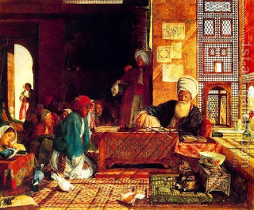

Bava Batra 116 - Man Who Leaves Not a Son

R. Yochanan said in the name of Rabbi Shimon ben Yochai, "Whoever does not leave behind a son to inherit him, the Holy One, Blessed be He is full of anger toward him."
From where do we know this? "... If a man dies and he has no son, and you will pass (veha'avartem) his inheritance ..." and "evrah" means a day of anger, as in "... a day of anger ..."
But is it a son or a student? Since Rabbi Yochanan lost his ten sons and would console people with "...look, this is a bone of my last son..." - it must be that he meant a student, for otherwise he would not publicize that God is angry with him. Then why did he say "son?" - These were the words of his teacher, but he himself felt that a man must leave a student.
Art: John Frederick Lewis - A Turkish School in the Vicinity of Cairo